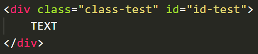
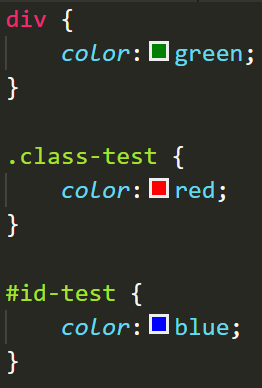
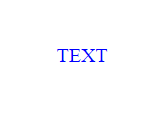
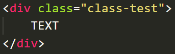
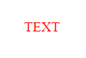
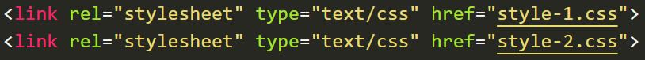
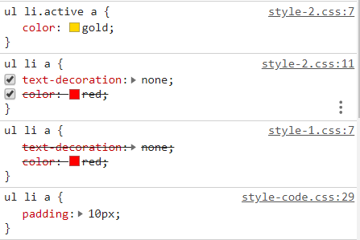
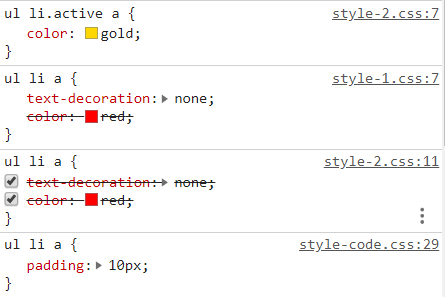

What is CSS ?
"Cascading Style Sheets (CSS) is a stylesheet language used to describe the presentation of a document written in HTML or XML (including XML dialects such as SVG, MathML or XHTML). CSS describes how elements should be rendered on screen, on paper, in speech, or on other media."
Specificity by selector
if you assign every selector to one element like this
The happen if you has change color by every selector
result is:
that mean id was has more specificity than other.
what if i delete id selector
result:
The most specificity of selector is ID and the low specificity is element.
" ID > CLASS > ELEMENT "
What happen when you link two css with some same selector together ?
we test with 2 file link 2 CSS file but they're switched
then we inspect the linker INDEX and HOME
 you will see html choose the first CSS you link and if they have state(:state) html will get that style instead.